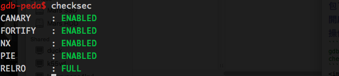
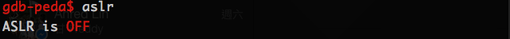
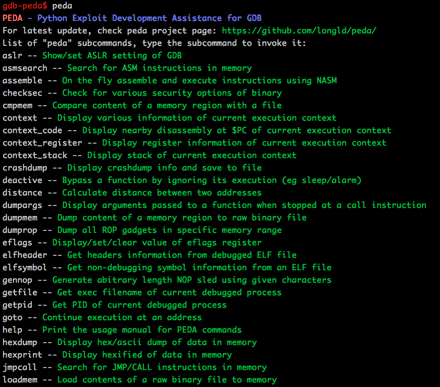

source code & binary
vul
vul.c
libc.so
此題一樣先設法 overflow，嘗試一次輸入 200 個字元之後發現程式雖然異常造成無限循環但是並沒有發生 segmentatioin fault，透過 peda gdb 裡面附的 checksec 查看程式開啟哪些防護，首先介紹下 gdb 的 peda 套件
peda 為 Python Exploit Development Assistance 的縮寫，也就是專門為了滲透測試開發的 gdb 工具，裡面包了一些好用的工具讓使用者可以在開啟 gdb 的時候直接使用，以下為操作範例
1 | gdb ./vul |

裡面標註了 stack guard(canary)，NX(DEP)，PIE(tex aslr)，RELRO(got readonly or not)等等重要資訊1
2gdb ./vul
aslr

也可以從上述指令觀察 ASLR 是否開啟，也可以直接輸入 peda 來查詢有什麼指令可以使用

從 checksec 發現程式有 stack canary 因此直接 buffer overflow 會有問題，且有開 NX 看起來應該不是用 shellcode 來解，透過下列指令1
file vul
發現程式 library 為 dynamic link 看起來也不能直接用 ROP chain 拿到 shell，連 PIE 都開了看起來也不能 jump to code，雖然 ASLR 看起來沒開但是也沒辦法透過大量輸入導致 segmentation fault，因此這一題應該是從程式本身的邏輯錯誤這個方向來找了，可以透過原本就提供的 C file 查看原始碼，端倪在此1
2
3
4
5
6
7
8
91 for(i = n ; i > 0 ; i--){
2 for( j = 0 ; j < i ; j++){
3 if(buf[j] > buf[j+1]){
4 tmp = buf[j] ;
5 buf[j] = buf[j+1];
6 buf[j+1] = tmp ;
7 }
8 }
9 }
發現第 5 和 6 行中當 j 在最大值時會和下一個不應該被交換的位置做交換動作，發現可以透過該方式 leak 出 stack 之後位置的值，判斷可從該處 leak stack canary，可以透過將輸入值調整為極大值 (由於原始碼定義的資料結構為 unsign int，因此輸入負值就可以創造極大值) 就可以將 [j+1] 的數值推到 stack 的最前面用來當做 leak 的工具，另外也可以透過調整輸入值為很小的數值來將特定數值推到最後面的 [j+1] 來還原 stack canary 躲過 stack guard 檢查，而在 return address 的位置則透過 return to libc 跳至 system 執行即可拿到 shell。
payload